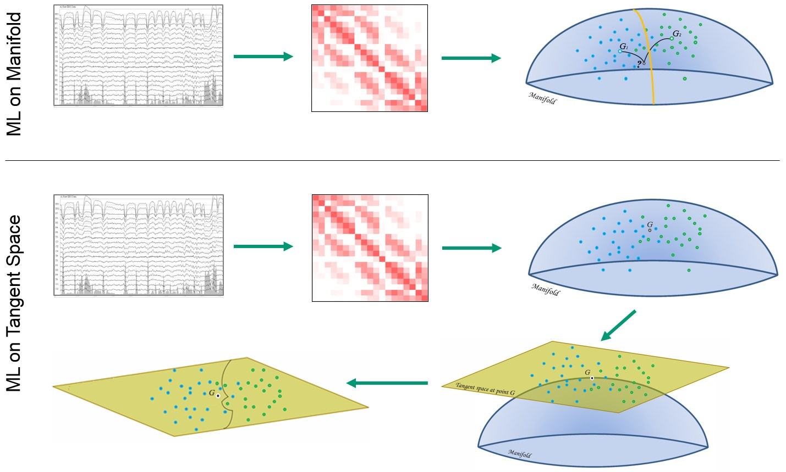

PosDefManifoldML Documentation
Requirements & Installation
Julia: version ≥ 1.1
Packages: see the dependencies of the main module.
To install the package, execute the following commands in Julia's REPL:
]add PosDefManifold PoSDefManifoldMLReviewers & Contributors
Independent reviewers for both the code and the documentation are welcome. To contribute, please check the secion How to Contribute.
TroubleShoothing
| Problem | Solution |
|---|---|
In Windows, an error may appear at execution time the first time an SVM model is fitted or is passed to the crval function | Discourse |
UndefVarErrors, looking like metric not defined, Fisher not defined, etc. | install the PosDefManifold package |
About the Authors
Marco Congedo, corresponding author, is a Research Director of CNRS (Centre National de la Recherche Scientifique), working at UGA (University of Grenoble Alpes). Contact: first name dot last name at gmail dot com
Anton Andreev is a research engineer working at the same institution.
Fahim Doumi at the time of writing was a research ingeneer at the same institution.
Saloni Jain at the time of writing the package was a student at the Indian Institute of Technology, Kharagpur, India.
Overview
Riemannian geometry studies smooth manifolds, multi-dimensional curved spaces with peculiar geometries endowed with non-Euclidean metrics. In these spaces Riemannian geometry allows the definition of angles, geodesics (shortest path between two points), distances between points, centers of mass of several points, etc.
In several fields of research such as computer vision and brain-computer interface, treating data in the manifold of positive definite matrices has allowed the introduction of machine learning approaches with remarkable characteristics, such as simplicity of use, excellent classification accuracy, as demonstrated by the winning score obtained in six international data classification competitions, and the ability to operate transfer learning (Congedo et al., 2017a, Barachant et al., 2012)🎓.
In this package we are concerned with making use of Riemannian Geometry for classifying data in the form of positive definite matrices (e.g., covariance matrices, Fourier cross-spectral matrices, etc.). This can be done in two ways: either directly in the manifold of positive definite matrices using Riemannian machine learning methods or in the tangent space, where traditional (Euclidean) machine learning methods apply (i.e., linear discriminant analysis, support-vector machine, logistic regression, random forest, etc.).
 Figure 1
Schematic representation of Riemannian classification. Data points are either natively positive definite matrices or are converted into this form. The classification can be performed by Riemannian methods in the manifold of positive definite matrices or by Euclidean methods after projection onto the tangent space.
Currently implemented models are:
Acting on the manifold of PD matrices
- the Riemannian minimum-distance to mean (MDM).
Acting on the tangent space
- elastic-net logistic regression (ENLR), including the pure Lasso and pure Ridge logistic regression;
- support-Vector machine (SVM), including C-Support Vector Classification (C-SVC), nu-SVC, one-class SVC, *Epsilon Support-Vector Regression** (SVR) and *nu SVR**.
For a formal introduction to the manifold of positive definite matrices the reader is referred to the monography written by Bhatia(2007)🎓.
For an introduction to Riemannian geometry and an overview of mathematical tools implemented in the PostDefManifold package, which is used here, see Intro to Riemannian Geometry.
Code units
PosDefManifoldML includes six code units (.jl files):
| Unit | Description |
|---|---|
| MainModule | Main module, declaring constants and types |
| mdm.jl | Unit implementing the MDM( Minimum Distance to Mean) machine learning model |
| enlr.jl | Unit implementing the ENLR( Elastic Net Logistic Regression) model, including the LASSO and RIDGE LR |
| svm.jl | Unit implementing the SVM (Support-Vector Machine) models |
| cv.jl | Unit implementing cross-validation procedures |
| conditioners.jl | Unit implementing pre-conditioning pipelines |
| stats_descriptive.jl | Unit implementing descrptive statistics for cross-validation |
| stats_inferential.jl | Unit implementing inferential statistics (tests) for cross-validation |
| tools.jl | Unit containing general tools useful for machine learning |
| private.jl | Unit containing internal functions |
🎓
References
A. Barachant, S. Bonnet, M. Congedo, C. Jutten (2012) Multi-class Brain Computer Interface Classification by Riemannian Geometry, IEEE Transactions on Biomedical Engineering, 59(4), 920-928.
A. Barachant, S. Bonnet, M. Congedo, C. Jutten (2013) Classification of covariance matrices using a Riemannian-based kernel for BCI applications, Neurocomputing, 112, 172-178.
P. Bayle, A. Bayle, L. Janson, L. Mackey (2020) Cross-validation confidence intervals for test error, Proc. of the 34th Int. Conf. on Neural Information Processing Systems (NIPS), Vancouver, canada, 1371, 16339-16350.
R. Bhatia (2007) Positive Definite Matrices, Princeton University press.
M. Congedo, A. Barachant, R. Bhatia R (2017a) Riemannian Geometry for EEG-based Brain-Computer Interfaces; a Primer and a Review, Brain-Computer Interfaces, 4(3), 155-174.
M. Congedo, A. Barachant, E. Kharati Koopaei (2017b) Fixed Point Algorithms for Estimating Power Means of Positive Definite Matrices, IEEE Transactions on Signal Processing, 65(9), 2211-2220.
Rodrigues PLC, Jutten C, Congedo M (2019) Riemannian Procrustes Analysis : Transfer Learning for Brain-Computer Interfaces, IEEE Transactions on Biomedical Engineering, 66(8), 2390-2401.
P. Zanini P, M. Congedo, C. Jutten, S. Said, Y. Berthoumieu (2018) Transfer Learning: a Riemannian geometry framework with applications to Brain-Computer Interfaces, IEEE Transactions on Biomedical Engineering, 65(5), 1107-1116.
Resources on GLMNet
A more advanced wrapper for GLMNet
Resources on LIBSVM
Contents
- PosDefManifoldML Documentation
- Tutorial
- MainModule
- mdm.jl
- enlr.jl
- cv.jl
- conditioners.jl
- stats_descriptive.jl
- stats_inferential.jl
- How to Contribute
- tools.jl
Index
PosDefManifoldML.CVresPosDefManifoldML.CompressPosDefManifoldML.ENLRPosDefManifoldML.ENLRmodelPosDefManifoldML.EqualizePosDefManifoldML.MDMPosDefManifoldML.MDMmodelPosDefManifoldML.PipelinePosDefManifoldML.RecenterPosDefManifoldML.SVMPosDefManifoldML.SVMmodelPosDefManifoldML.ShrinkPosDefManifoldML.TikhonovDataFrames.transform!LinearAlgebra.normalize!PosDefManifold.dimPosDefManifoldML.barycenterPosDefManifoldML.binarylossPosDefManifoldML.confusionMatPosDefManifoldML.crvalPosDefManifoldML.cvSetupPosDefManifoldML.demean!PosDefManifoldML.distancesPosDefManifoldML.gen2ClassDataPosDefManifoldML.includesPosDefManifoldML.loadPosDefManifoldML.pickfirstPosDefManifoldML.predictAccPosDefManifoldML.predictErrPosDefManifoldML.rescale!PosDefManifoldML.saveasPosDefManifoldML.standardize!PosDefManifoldML.testCVPosDefManifoldML.tsMapPosDefManifoldML.tsWeightsStatsAPI.fitStatsAPI.fit!StatsAPI.predictPosDefManifoldML.@pipeline